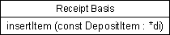
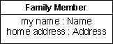
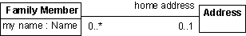
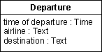
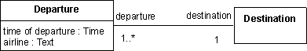
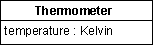

| Рекомендация: Проектирование класса |
 |
|
| Связанные элементы |
|---|
ОпределениеКласс проектирования представляет абстракцию одного или нескольких классов в реализации системы; точный объект, которому он соответствует, зависит от языка реализации. Например, в объектно-ориентированном языке, таком как C++, класс проектирования может соответствовать простому классу. В языке Ада класс может соответствовать специальному типу, определенному в видимой части пакета. Классы определяют объекты, которые, в свою очередь, реализуют варианты использования. Класс основан на требованиях, предъявляемых реализациями вариантов использования объектам системы, а также на всех ранее разработанных моделях объектов. Успешность класса во многом зависит от среды реализации. Например, правильный размер класса и его объектов зависит от языка программирования. То, что кажется подходящим в языке Ада, может оказаться неудачным в Smalltalk. Классы должны отображаться в конкретный феномен в языке реализации, и структура классов должна быть такой, чтобы в результате отображения получался хороший код. Несмотря на то, что особенности языка реализации влияют на модель проектирования, вы должны следить за тем, чтобы структура класса была простой для понимания и модификации. Разрабатывать класс следует так, как если бы вы располагали классами и инкапсуляцией, пусть и не поддерживаемыми в языке реализации. ОперацииЕдинственный способ, с помощью которого объекты могут получить доступ к атрибутам или взаимосвязям данного объекта или повлиять на них, - это воспользоваться его операциями. Операции объекта определяются его классом. Операции позволяют выполнять конкретное поведение, которое может повлиять на атрибуты и взаимосвязи объекта и вызвать выполнение других операций. Операция соответствует функции-члену в языке C++ и функции или процедуре в языке Ада. Поведение, которое вы присваиваете объекту, зависит от его роли в реализациях варианта использования. ПараметрыВ спецификации операции параметры - это формальные параметры. У каждого параметра есть имя и тип. Для указания операций и их параметров можно воспользоваться синтаксисом и семантикой языка реализации, так что эти операции и параметры уже будут указаны в языке реализации к моменту начала кодирования. Пример: В системе машины для переработки вторсырья объекты класса Receipt Basis следят за тем, сколько предметов определенного типа положил клиент. Поведение объекта Receipt Basis включает увеличение числа возвращенных объектов. Это действие выполняется операцией insertItem, получающей ссылку на положенный предмет.  При указании операций пользуйтесь синтаксисом и семантикой языка реализации. Операции классовОперация почти всегда задает поведение объекта. Операция может также задавать поведение класса - в этом случае она называется операцией класса. Это можно смоделировать в UML, задав соответствующую область действия операции. Область видимости операцииУ операции могут быть следующие области видимости:
Общедоступную область видимости следует применять в исключительных случаях, только когда операция необходима другому классу. Защищенная область видимости должна применяться по умолчанию; она защищает операцию от использования внешними классами, что способствует слабому связыванию и инкапсуляции поведения. Частную область видимости следует применять, когда вы хотите предотвратить наследование операции производными классами. Это позволяет отделить производные классы от базового и тратить меньше усилий на удаление или исключение неиспользуемых наследуемых операций. Реализационная область видимости наиболее ограничительна; она используется в случаях, когда операцию может применять только сам класс. Это разновидность Частной области видимости, вполне достаточной в большинстве случаев. СостоянияОбъект может реагировать на сообщение по-разному, в зависимости от того, в каком состоянии он находится; поведение объекта в зависимости от состояния определяется на связанной диаграмме состояний. Для каждого возможного состояния объекта диаграмма состояний описывает, какие сообщения может принимать объект, какие операции будут выполнены и в какое состояние затем перейдет объект. Дополнительная информация приведена в разделе Технология: диаграмма состояний. КооперированияКооперирование - это динамический набор взаимодействий объектов, в котором объекты обмениваются информацией путем отправки сообщений друг другу. Отправка сообщения выполняется непосредственно в Smalltalk и посредством вызова подпрограммы в Аде. Сообщение отправляется принимающему объекту, запускающему внутреннюю операцию. Сообщение указывает имя выполняемой операции и необходимые параметры. При отправке сообщений для всех параметров предоставляются фактические параметры (значения формальных параметров). Пересылки сообщений между объектами в реализации варианта использования переключение управления между объектами по мере запуска операций описаны на диаграммах взаимодействия. Информация об этих диаграммах приведена в разделах Технология: диаграмма последовательности и Технология: диаграмма связи. АтрибутыАтрибут - это именованное свойство объекта. Имя атрибута - это существительное, описывающее роль атрибута по отношению к объекту. У атрибута может быть начальное значение при создании объекта. Моделировать атрибуты следует только в том случае, если это упростит понимание объекта. Моделировать свойство объекта как атрибут следует лишь в том случае, если это свойство только данного объекта. В противном случае, вы должны смоделировать свойство с взаимосвязью ассоциации или агрегирования с классом, объекты которого представляют это свойство. Пример:  Пример моделирования атрибута. У каждого члена семьи есть имя и адрес. В данном примере задаются атрибуты мое имя и домашний адрес, относящиеся к типам Имя и Адрес, соответственно.  В данном примере ассоциация применяется вместо атрибута. Свойство мое имя, скорее всего, уникально у каждого члена семьи. Следовательно, его можно смоделировать как атрибут типа Имя. Адрес, напротив, является общим у всех членов семьи, поэтому его лучше всего моделировать с помощью ассоциации между классами Член семьи и Адрес. Не всегда просто сразу решить, следует ли моделировать концепцию как отдельный объект или как атрибут другого объекта. Добавление ненужных объектов в модель перегружает документацию и повышает объем работы. По этой причине, вы должны установить критерии, позволяющие определять важность концепции для системы.
В разных системах концепция может моделироваться по-разному. В одной системе концепция может быть столь важной, что ее лучше моделировать как объект. В другой она может играть второстепенную роль, и ее лучше моделировать как атрибут объекта. Пример: Например, система, предназначенная для авиационной компании, должна поддерживать вылеты.  Система, поддерживающая вылеты. Пусть персоналу аэропорта требуется система, поддерживающая вылеты. Для каждого вылета необходимо определить время вылета, рейс и место назначения. Это можно смоделировать как объект класса Вылет с атрибутами время вылета, рейс и место назначения. Если же система разработана для туристического агентства, то ситуация может быть несколько иной.  Места назначения рейсов образуют свой собственный объект - Место назначения. Время вылета, рейс и место назначения, естественно, по-прежнему будут необходимы. Однако требования будут другими, поскольку турагентство интересует вылет в заданное место назначения. Следовательно, необходимо создать отдельный объект для Места назначения. Объекты Вылет и Место назначения, разумеется, должны быть осведомлены друг о друге, для чего между их классами создается ассоциация. При выборе атрибутов, которые должны быть определены в классе, следует учитывать важность тех или иных концепций. Атрибуты класса Автомобиль, без сомнения, будут различными в зависимости от того, являются его объекты частью системы регистрации транспортных средств или системы завода по производству автомобилей. Наконец, правила, определяющие, что следует представлять как объекты, а что - как атрибуты, неабсолютны. Теоретически все можно моделировать как объекты, но это слишком обременительно. Простое правило заключается в том, чтобы рассматривать объект как нечто, что на определенном этапе используется безотносительно других объектов. Кроме того, необязательно моделировать каждое свойство объекта с помощью атрибута - достаточно моделировать лишь те свойства, которые необходимы для понимания объекта. Не нужно моделировать детали, слишком тесно связанные с реализацией: их лучше оставить разработчику. Атрибуты классаАтрибут почти всегда задает свойства объекта. Атрибут может также задавать свойства класса - в этом случае он называется атрибутом класса. Это можно смоделировать в UML, задав соответствующую область действия атрибута. Моделирование внешних элементов с атрибутамиОбъект может инкапсулировать элемент, значение которого может изменяться независимо от поведения объекта. Это может быть нечто, являющееся на самом деле внешним элементом, но не смоделированное как субъект. Например, пусть границы системы выбраны так, что в их пределы попадает оборудование датчика. Датчик можно затем инкапсулировать в объекте, так чтобы измеряемое им значение образовывало атрибут. После этого это значение может изменяться непрерывно или периодически независимо от того, влияет ли на данный объект какой-либо другой объект в системе. Пример: Термометр можно смоделировать как объект; у объекта будет атрибут, соответствующий температуре, и его значение будет изменяться в ответ на изменение температуры окружающей среды. Другие объекты могут запрашивать текущую температуру, выполняя операцию над объектом термометра.  Значение атрибута температура изменяется спонтанно в объекте Термометр. Вы по-прежнему можете смоделировать инкапсулированное значение, изменяющееся таким образом, в виде обычного атрибута, однако вы должны указать в классе объекта, что оно изменяется спонтанно. Область видимости атрибутаУ атрибута могут быть следующие области видимости:
Общедоступную область видимости следует применять в исключительных случаях, только когда атрибут напрямую доступен другому классу. Определение общедоступной области видимости - это, фактически, краткая запись для определения области видимости атрибута как защищенной, частной или реализационной с соответствующими общедоступными операциями по извлечению и заданию значения атрибута. Общедоступная область видимости атрибута может использоваться в качестве объявления, указывающего генератору кода, что эти операции извлечения и задания должны генерироваться автоматически для экономии времени при определении класса. Защищенная область видимости должна применяться по умолчанию; она защищает атрибут от использования внешними классами, что способствует слабому связыванию и инкапсуляции поведения. Частную область видимости следует применять, когда вы хотите предотвратить наследование атрибута производными классами. Это позволяет отделить производные классы от базового и тратить меньше усилий на удаление или исключение неиспользуемых наследуемых атрибутов. Реализационная область видимости наиболее ограничительна; она используется в случаях, когда атрибут может применяться только самим классом. Это разновидность Частной области видимости, вполне достаточной в большинстве случаев. Внутренняя структураНекоторые классы могут представлять сложные абстракции и имеют сложную структуру. Во время моделирования класса проектировщик может представить его внутренние участвующие элементы и их взаимосвязи, чтобы убедиться, что реализатор правильно реализует кооперирования в этом классе. В UML 2.0 классы определяются как структурированные классы, которые могут иметь внутреннюю структуру и порты. Классы могут быть разложены в наборы соединенных частей, также допускающие разложение. Класс может быть инкапсулирован посредством передачи связи от внешних источников к портам удаленного подключения, подчиняющимся объявленным интерфейсам. Таким образом, помимо применения диаграмм классов для представления взаимосвязей классов (например, ассоциаций, композиций и агрегирований) и атрибутов, проектировщик может воспользоваться составной структурной диаграммой. Эта диаграмма позволяет разработчику продемонстрировать, каким образом экземпляры внутренних частей играют свои роли в экземпляре заданного класса. Дополнительная информация по этой теме и примеры диаграмм составных структур приведены в разделе Концепция: структурированный класс. |
© Copyright IBM Corp. 1987, 2006. Все права защищены.. |